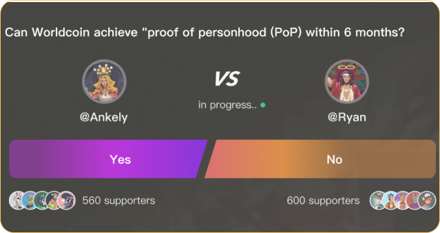

{{define "section-8"}}

<div id="token" class="container space-top-3">
  <div class="container-xl container-fluid space-md-2 px-0 px-md-12 px-lg-12">

 <div class="row justify-content-lg-between align-items-md-center"> 

    <div class="col-lg-6 mb-3 mb-lg-0 order-md-0 order-2">
      <div class="mb-3">
        <div class="content-6tN">
          <p class="karma-protocol">KarmaPi's NFTs symbolize personal beliefs and cultural heritage, bridging the past and present, tradition and innovation. These NFTs are more than collectibles; they're rich in meaning, visually appealing, and represent personal beliefs and identity. Our community-driven prediction market maximizes cultural inclusivity, allowing everyone to initiate and participate in events. Using prediction tools, NFTs, and KART tokens, we build a comprehensive divination culture ecosystem.</p>
 
        </div>
      </div>
     
    </div>

    <div class="col-lg-6 mb-3 mb-lg-0 order-md-0 order-1">
      <div class="position-relative section-3-bg">
        <div class="space-top-2"></div>
        
        <!-- End SVG Elements -->
      </div>
    </div>
  </div>
</div> 
    </div>


      
{{end}}